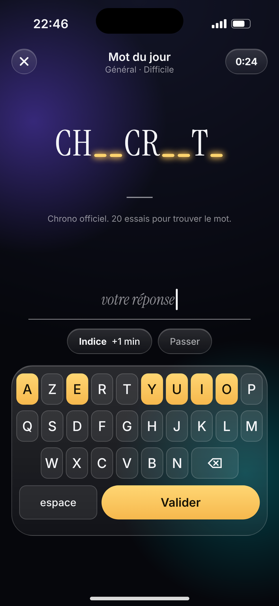

Tu arrives à lire ça ?
Ton cerveau devine les mots…
grâce aux consonnes.
« Une fleur jaune qui devient une boule de graines à souffler. »
Très fort !
Pissenlit ! Expert.
Un mot comme ça,
chaque jour.
